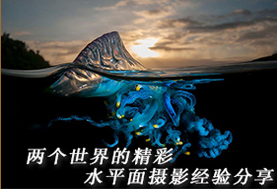
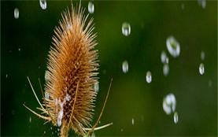
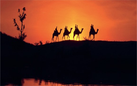
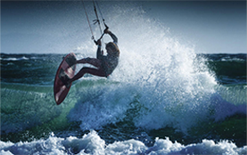

疯狂摄影名人---Algernon yaikau技术技巧

-

用镜头“凝固”雨滴
下雨天，人们最常拍摄的就是雨点，但雨点是非常难以捕捉的拍摄对象。需要选择较暗的背景作为衬托，同时还得有较亮的前景。
取自摄影专题，重点推荐
-

不走弯路！5个简单方法把你的照片变成钱
谁说摄影只能穷3代，摄影还可以帮你赚钱！下面我们将为你提供一些以摄影谋生、赚外快的方式，让你在花钱购买摄影器材后，不仅体会到摄影的快乐，更能得到实际的回报。
取自摄影专题，重点推荐
-

夏日拍水大作战
水在生活中随处可见，但如何用镜头把水呈现出千姿百态的创意画面呢？与其他摄影主题相同，被摄主体和所采用的技术完全你可以自己来决定，
取自摄影专题，重点推荐
-
 正面？侧面？制作一张独特的自拍照
正面？侧面？制作一张独特的自拍照
今天我们介绍的这个方法相当有趣并且富有创意，最主要是能让你的自拍照片在周围其他人的自拍照中脱颖而出
取自摄影专题，重点推荐
-
传承经典黑白肖像：灰度中把控人物肤色
去除图片的颜色之后， 让人们对于图片的细节、质感有了更敏感的视觉感受。
取自摄影专题，重点推荐
-
如何拍出有趣的剪影
很多摄影师钟情于剪影题材的拍摄，任何物体都可以成为剪影拍摄的主体，只要你有足够的创意。
取自摄影专题，重点推荐